§9.2 二重积分的计算
一、直角坐标系下的计算
定义：
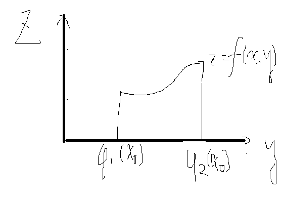
V曲顶=∬Df(x,y)dxdy=∫abA(x)dx
A(x)=∫φ1(x0)φ2(x0)f(x,y)dy
∴V曲柱=∬Df(x,y)dσ=∫ab[∫φ1(x)φ2(x)f(x,y)dy]dx
定理：
- D为X型区域【先y后x】：∬Df(x,y)dxdy=∫abdx∫φ1(x)φ2(x)f(x,y)dy
- D为Y型区域【先x后y】：∬Df(x,y)dxdy=∫cddy∫ψ1(y)ψ2(y)f(x,y)dx
例题
-
求 ∬Ddσ，其中 D 为 y=2x、x=2y、x+y=3 围成的区域
-
X 型区域
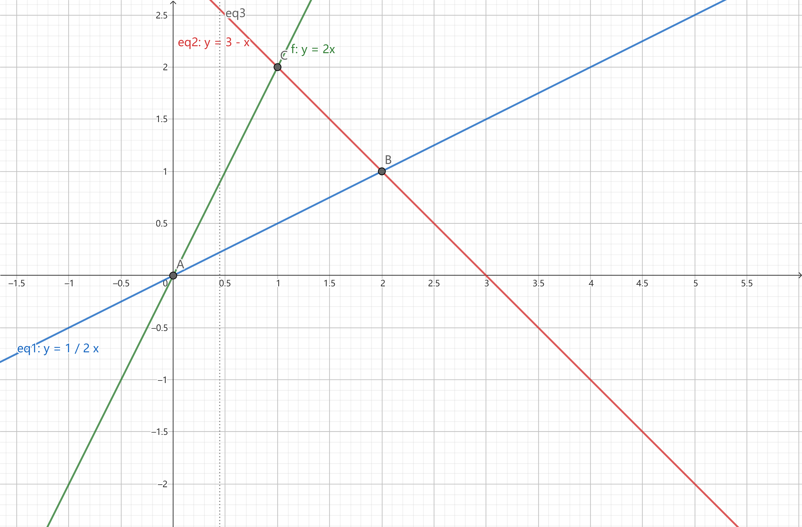
I=∫01dx∫2x2x1dy+∫12dx∫2x3−xdy=∫01(2x−2x)dx+∫12(3−x−2x)dx=23
-
Y型区域
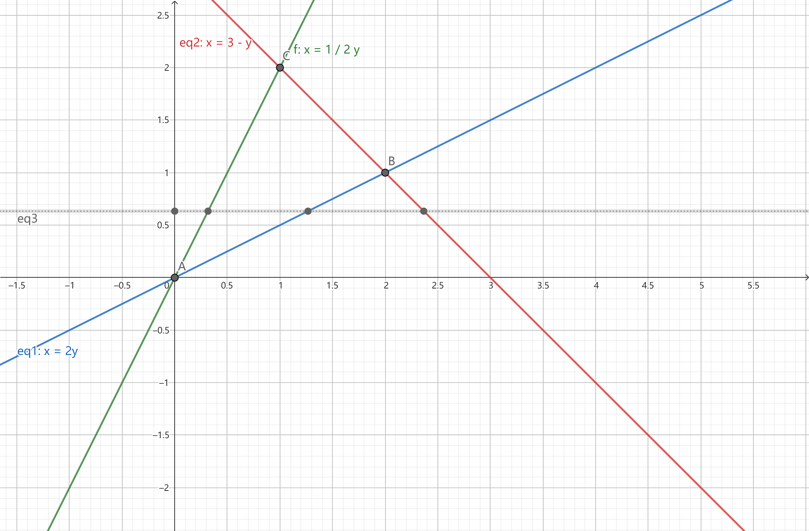
I=∫01dy∫2y2y1dx+∫12dy∫2y3−y1dx=23
-
计算 ∬Dxydσ，其中 D 为 y2=x 和 y=x−2 围成的区域
-
X型区域：
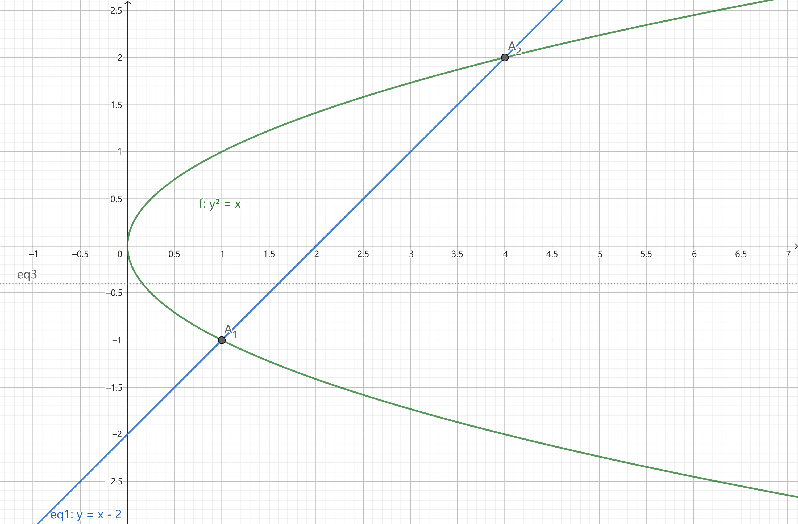
I=∫01dx∫−xxxydy+∫14dx∫x−2xxydy=∫01(x⋅21y2∣−xx)dx+∫14x⋅21[x−(x−2)2]dx=845
-
Y型区域：
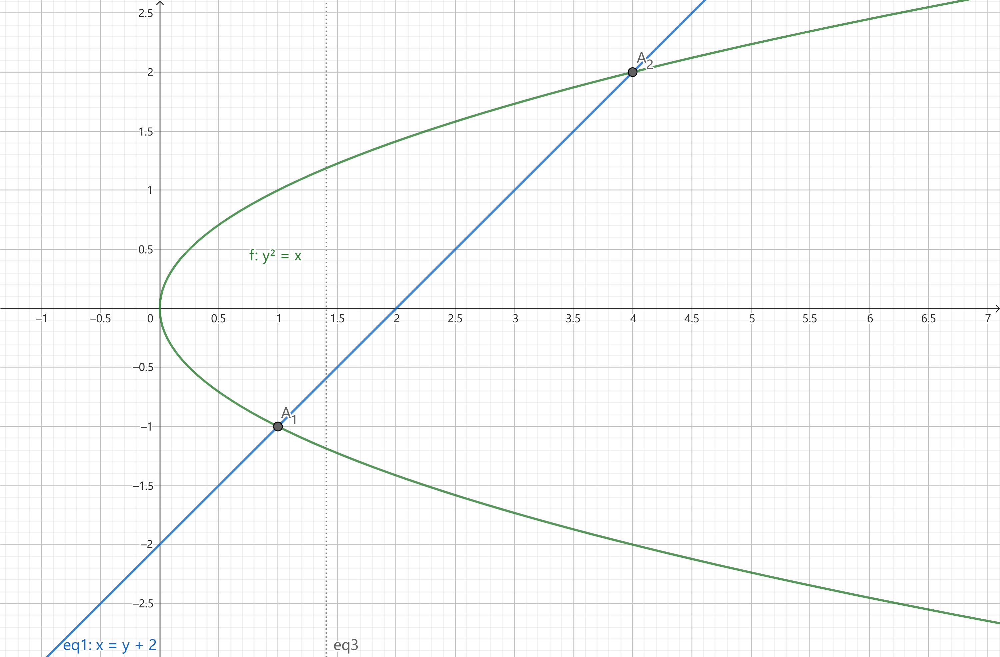
I=∫−12dy∫y2y+2xydx=∫−12y⋅2(y+2)2−y4dy=845
-
计算 ∬Dxsinxdxdy，其中 D 为 y=x、y=x2 所围成的区域
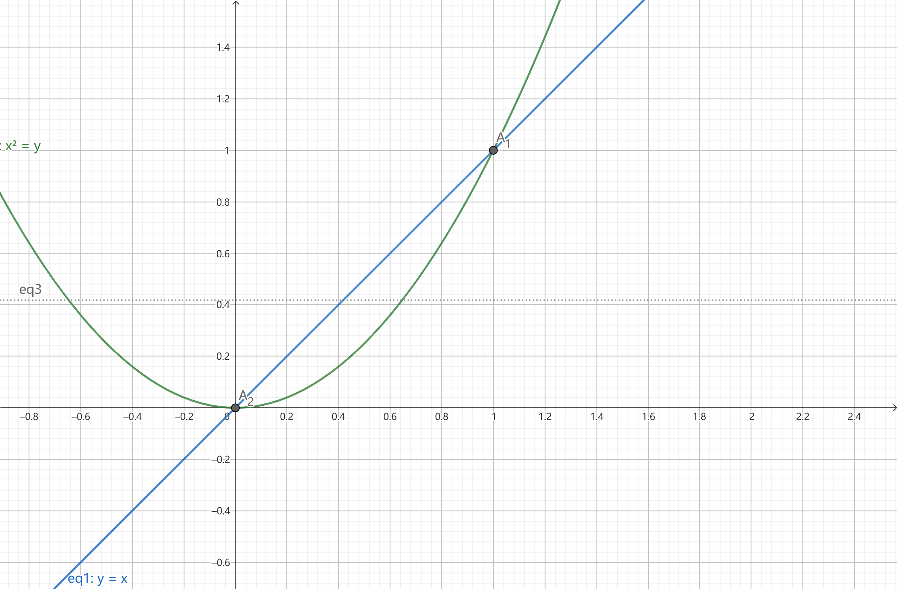
I=∫01dx∫x2xxsinxdy=∫01xsinx(x−x2)dx=1−sin1
注：本题用Y型积分会卡住
-
交换积分次序
-
∫12dy∫y1ydx，积分区域 D：1≤y≤2、y1≤x≤y
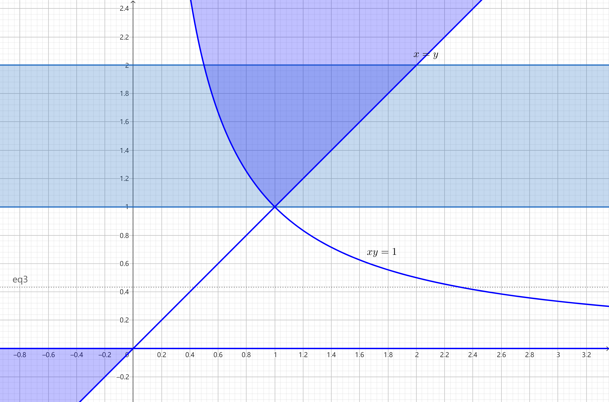
原式 =∫211dx∫x12f(x,y)dy+∫12dx∫x2f(x,y)dy
-
∫01dx∫02x−x2f(x,y)dy+∫12dx∫02−xf(x,y)dy
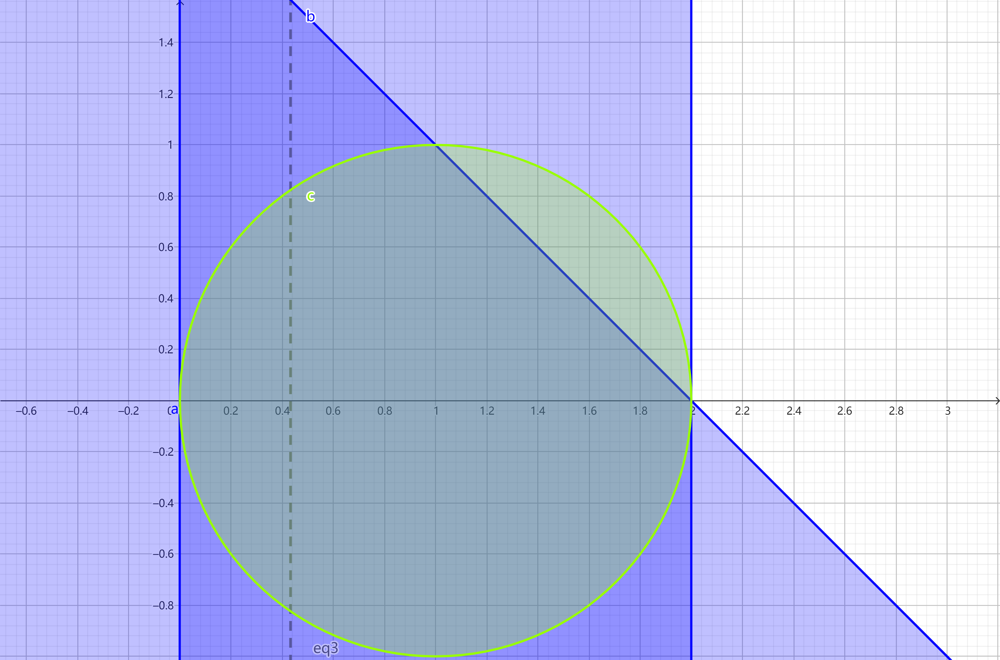
区域为 0≤x≤2，(x−1)2+y2≤1，y≤2−x
原式 =∫01dy∫1−1−y22−yf(x,y)dx
-
证明 [∫abf(x)g(x)dx]2≤[∫abf2(x)dx][∫abg2(x)dx]
-
法一：∫ab[f(x)±tg(x)]2dx≥0
t2∫abg2(x)dx+t⋅2∫abf(x)g(x)dx+∫abf2(x)dx≥0Δ=[2∫abf(x)g(x)]2−4[∫abg2(x)dx][∫abf2(x)dx]
整理可得原式
-
法二
左=[∫abf(x)g(x)dx][∫abf(y)g(y)dy]=∬Df(x)g(x)f(y)g(y)dxdy(D:a≤x≤b,a≤y≤b)
右=[∫abf2(x)dx][∫abg2(y)dy]=∬Df2(x)g2(y)dxdy=∬Df2(y)g2(x)dxdy
2右−2左=∬D[f(x)g(y)−f(y)g(x)]2dxdy≥0，得证
二、极坐标系下的计算
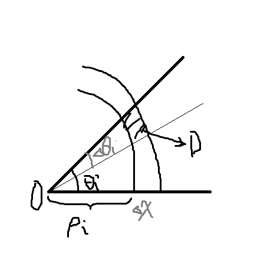
Δσi=2Δθi[(ρi+Δρi)2−ρi2]=22ρi+Δρi+Δρi2Δθi=22ρi+ΔρiΔρiΔθi=2ρi+(ρi+Δρi)ΔρiΔθi≈ρiΔρiΔθi
∴dσ=ρdρdθ
∬Df(x,y)dσ=∬Df(ρcosθ,ρsinθ)ρdρdθ(D:α≤θ≤β,ϕ1(θ)≤ρ≤ϕ2(θ))=∫αβdθ∫ϕ1(θ)ϕ2(θ)f(ρcosθ,ρsinθ)ρdρ
例题
-
求 I=∬D1⋅dσ，其中 D:x2+y2≤2Rx
-
法一
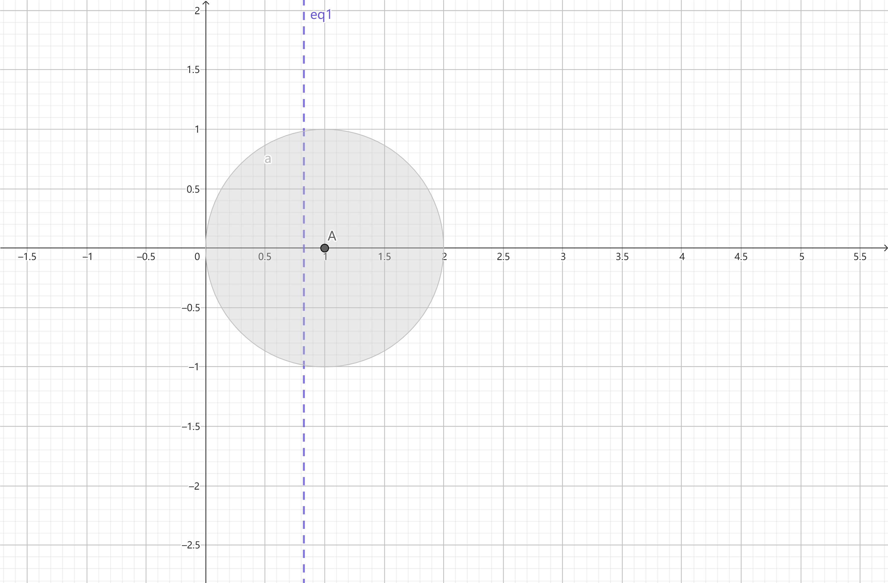
I=∫02Rdx∫−2Rx−x22Rx−x2dy=2∫02R2Rx−x2dx=πR2
-
法二
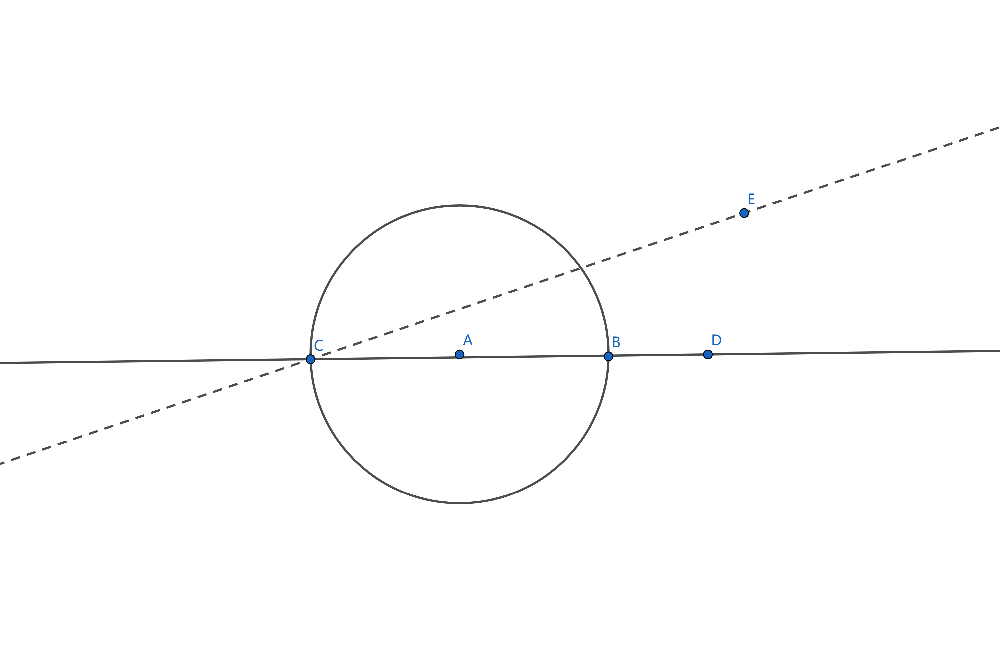
I=∫2π2πdθ∫02Rcosθ⋅1⋅ρdρ=∫−2π2π2(2Rcosθ)2dθ=πR2
-
求 I=∬Dx2dσ，其中 D:x2+y2≤1
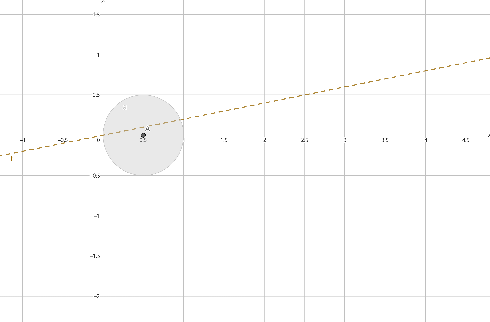
-
法一
I=∫02πdθ∫01ρ2cos2θρdρ=(∫02πcos2θdθ)(∫01ρ3dρ)=4π
-
法二：D关于 y=x 对称
∬Dx2dσ=∬Dy2dσ=21∬D(x2+y2)dσ=21(∫02πdθ)(∫01ρ2ρdρ)=21×2π×41=4π
-
将 ∬Df(x,y)dxdy 化为二次积分，其中 D:0≤x≤1,1−x≤y≤1−x2
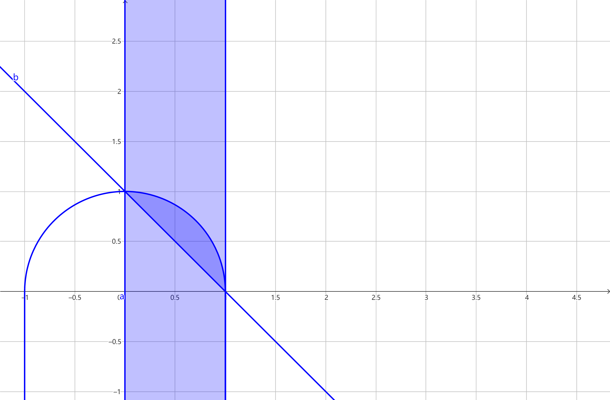
原式=∫01dx∫1−x1−x2f(x,y)dxdy=∫02πdθ∫cosθ+sinθ11f(ρcosθ,ρsinθ)ρdρ
-
将 ∬Df(x2+y2,2xy)dσ 化为二次积分，其中 D:0≤x≤3,−x≤y≤3x
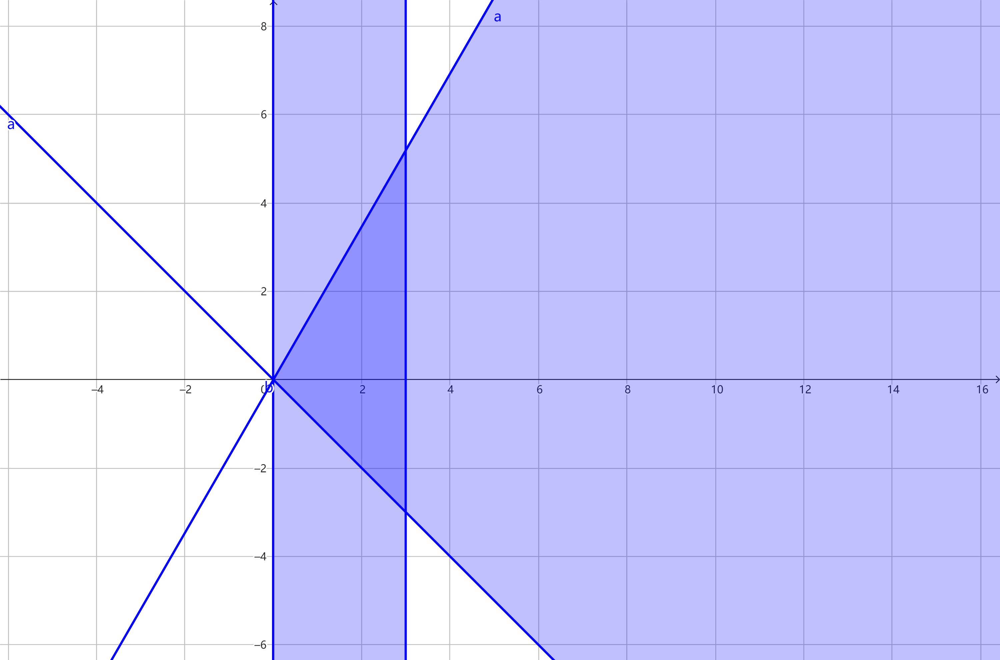
I=∫03dx∫−x3xf(x2+y2,2xy)dy=∫−30dy∫−y3f(x2+y2,2xy)dx+∫033dy∫33y3f(x2+y2,2xy)dx=∫−4π3πdθ∫0cosθ3f(ρ,ρ2sin2θ)ρdρ
-
计算 ∬D∣x2−y∣dxdy，其中D为 x=0、x=1、y=0、y=1 所围成的区域
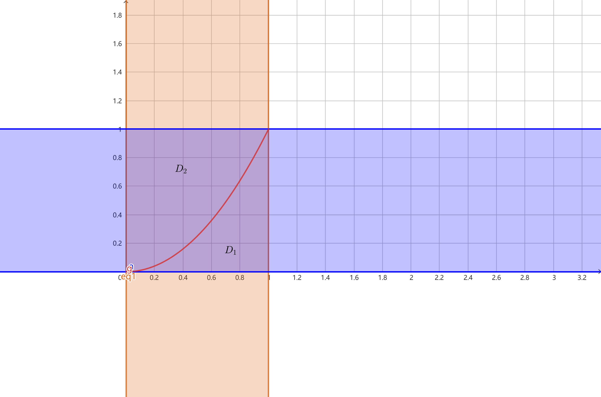
I=∬D1(x2−y)dxdy+∬D2(y−x2)dxdy=∫01dx∫0x2(x2−y)dy+∫01dx∫x21(y−x2)dy=3011
-
f(x,y)=xy+∬Df(x,y)dxdy，其中D为 y=0、y=x2、x=1 所围区域，求 f(x,y)
解：设 f(x,y)=xy+C
∬Df(x,y)dxdy=∬Dxydxdy+∬DCdxdy
C=∬Dxydxdy+C∬Ddxdy
I1=∬Dxydxdy=∫01dx∫0π2xydy=121
I2=∬Ddxdy=∫01dx∫011dy=31
∴C=81
-
求 ∬Df(xy,x2+y2)dxdy，其中D为 y=kx(k>0) 与 x2+y2−2ax=0(a>0) 所围成的包含圆心的部分
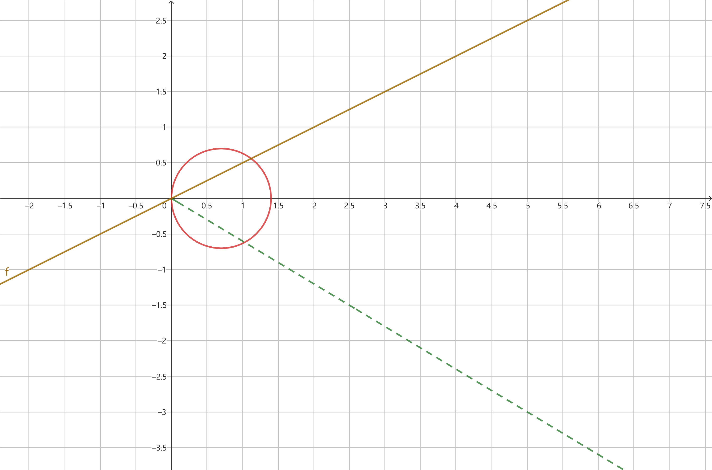
I=∫−2πarctankdθ∫02acosθf(ρ2cosθsinθ,ρ2)ρdρ
-
将 ∫01dy∫−yyf(x,y)dx 化为极坐标系下二次积分
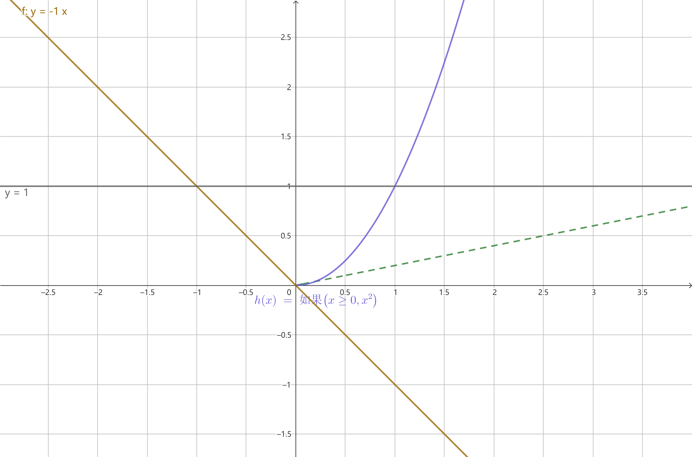
I=∫04πdθ∫0cosθtanθf(x,y)ρdρ+∫4π43πdθ∫0sinθ1f(x,y)ρdρ
-
计算 ∬De−x2−y2dσ，其中 D:x2+y2≤a2
解：
I=∫02πdθ∫0ae−ρ2ρdρ=(∫02πdθ)(∫0ae−ρ2ρdρ)=2π(−21)∫0ae−ρ2d(−ρ2)=1−e−a2
由此可证明 ∫0+∞e−x2dx=2π
证：∫0+∞e−x2dx=u→+∞lim∫0ue−x2dx
令 ∫0ue−x2dx=Iu
I1=∬D1e−x2−y2dxdy=4π(1−e−a2)（D1为第I象限以a为半径的四分之一圆区域）
Iu2=(∫0ue−xdx)(∫0ue−ydy)=∬Due−x2−y2dxdy=∬D1e−x2−y2dxdy+∬D补e−x2−y2dxdy≥0
Iu2≥I1
4π(1−e−u2)≤Iu2≤4π(1−e−2u2)
I2=∬D2e−x2−y2dxdy，D2:x∈[0,2u],y∈[0,2u]
∴a→+∞limIu2=4π，∫0+∞e−x2dx=u→+∞limIu=2π
-
计算 x2+y2=az 与 z=2a−x2+y2 所围成的体积
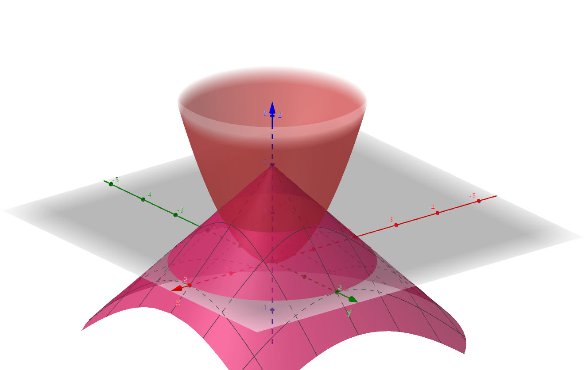
两曲面交线为 {x2+y2=a2z=a，投影为 x2+y2=a2
V=∬D(2a−x2+y2−ax2+y2)dxdy=∫02πdθ∫0a(2a−ρ−aρ2)ρdρ=65πa3
三、换元公式
{x=x(u,v)y=y(u,v),dσ=dxdy
∬Df(x,y)dxdy=∬Df(x(u,v),y(u,v))∣J(u,v)∣dudv
其中 J(u,v)=∂u∂x∂u∂y∂v∂x∂v∂y
当 {x=ρcosθy=ρsinθ 时，J(ρ,θ)=∂ρ∂x∂ρ∂y∂θ∂x∂θ∂y=ρ
广义极坐标变换：{x=aρcosθy=bρsinθ(a,b,ρ>0)
∬Df(x,y)dxdy=∬Df(aρcosθ,bρsinθ)abρdρdθ
例题
求椭圆 a2x2+b2y2=1 的面积（a>0，b>0）
解：
- 法一：S=4∫0ab(1−a2x2)dx=πab
- 法二：{x=aρcosθy=bρsinθ
S=∬Ddσ=∫02πdθ∫011⋅abρdρ=2π⋅ab⋅21=πab
D:(x−a)2+(y−b)2≤R2 求法：
{x=a+ρcosθy=b+ρsinθ，∣J(ρ,θ)∣=ρ
I=∫02πdθ∫0Rf(a+ρcosθ,b+ρsinθ)ρdρ